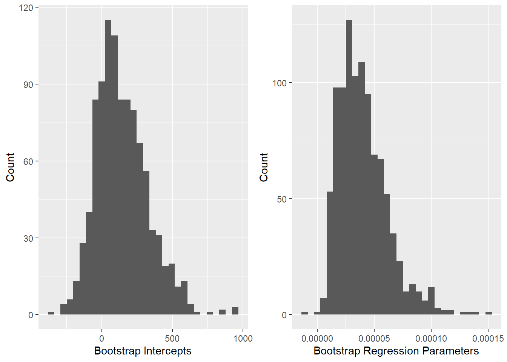

# Import the data
bootstrapping_data_cleaned = read.csv('bootstrapping_data_cleaned.csv',
stringsAsFactors = TRUE)Introduction
Bootstrap Methods: Another Look at the Jackknife (B. Efron 1979) is credited as being the creation of bootstrapping by author B. Efron. It starts by explaining that bootstrapping is a step above the jackknife method, and that the jackknife is a linear expansion for estimating the bootstrap. Starting in the introduction, it is stated that the bootstrap is shown to estimate the variance of the sample median, which is an area that the jackknife fails at. It is also mentioned that the bootstrap does well at estimating the error rates in certain problems, which outperforms other non-parametric estimation methods. The problem attempting to be solved is estimating the sampling distribution based on the observed data. The idea behind the bootstrap method is listed in three parts. First, construct the sample probability distribution. Second, draw a random sample of size n. Lastly, approximate the sampling distribution by the bootstrap distribution. It is mentioned that that the difficult part of bootstrapping is calculating the bootstrap distribution and three methods are given to accomplish this; direct Monte Carlo approximations, and Taylor series expansion methods. A few applications are listed. These include estimating the median, error rate estimation in discrimination analysis, relationship with the jackknife, Wilcoxon’s statistic, and regression models. Finally, a list of some remarks regarding the bootstrap method are listed. Some important ideas listed are that the calculation of the bootstrap distribution using the Monte Carl method is easy to implement on the computer and that the bootstrap and jackknife provide approximate frequency statements and not approximate likelihood statements.
Nonparametric Estimates of Standard Error: The Jackknife, the Bootstrap, and Other Methods (Bradley Efron 1981) starts by giving some background on what the purpose of the paper is. In this case, we want to estimate the standard error based on the data. This is normally done through parametric modeling methods, but in the paper it is being done through nonparametric methods. All methods are being tested using the same scenario which is bivariate normal distribution. This paper has four points. They are to describe the various methods, show how the methods derive from the same idea, relate the methods to each other, and finally show how the methods perform differently even though they are similar. The Monte Carlo experiment that the data was obtained from is then described. The bootstrap method is the first that is looked at. The steps are described to obtain the bootstrap samples. Random samples are created from the original sample and the bootstrap estimate is obtained. This process is than repeated multiple time to achieve enough samples to accurately estimate the standard error. 128 and 512 total samples were used separately, and while the 512 total sample provided a slightly more accurate result, the increase was minimal. on this result, the size of N samples is not overly important past 50-100. A smoothed bootstrap method is than looked at. This produced by compromising the normal theory maximum, likelihood estimate and the nonparametric maximum likelihood estimate. The results of the smoothed bootstrap method were overall better than those in the on-smoothed bootstrap method. Next, the jackknife, infinitesimal jackknife, half-sampling, and random sub sampling methods are discussed. All results are displayed in a table containing th estimated values, standard deviation, and confidence interval for each estimate. Overall, the bootstrap method produced the results that closest matches the theoretical values.
In Bootstrapping - An Introduction And Its Applications In Statistics (Hossain 2000) the authors take a high-level approach to introducing the reader to bootstrapping along with applications to different parts of statistics. The introduction begins to explain what bootstrapping is and how it is accomplished. They make use of an example to help explain what bootstrapping is. In this case, they look at performing analysis on the population of the United States. It would be difficult, costly, and timely to sample the entire population so instead you might sample a smaller subset of the population and create new bootstrap samples using replacement. In this sense the bootstrap samples might contain duplicates or even omit certain responses from the original sample. Doing so allows interpretation of the entire population based on a subset of the population. One of the first applications looked at is estimation of means and confidence intervals for the mean. Another application is constructing confidence intervals for regression coefficients. The authors also look at regression models, case re-sampling, estimating the distribution of sample mean, Bayesian bootstrap, smooth bootstrap, parametric bootstrap, and re-sampling residuals as applications of bootstrapping. Lastly, some of the advantages and disadvantages are listed. One advantage is the simplicity of deriving estimates of standard errors and confidence intervals where a disadvantage would be that the result still depends on the original sample.
In The Importance of Discussing Assumptions when Teaching Bootstrapping (Totty, Molyneux, and Fuentes 2021) the authors spend time ensuring that the readers understand when it is appropriate to use bootstrapping methods by presenting the math along with experimental results. The paper starts with an introduction to what bootstrapping is. They also mention that bootstrapping has increased in popularity since it’s inception with applications in linear regression and neural networks among other fields. The methods focused on during the paper are studentized, basic, and percentile bootstrap intervals and their hypothesis tests. The next section focuses on why it’s important to teach statistical computing and bootstrapping. One feature relevant to bootstrapping is that students understandings of confidence intervals and statistical inference relies on their understanding of sampling distributions. Next, some of the assumptions for bootstrapping are discussed. The assumptions were split based on interval estimation and hypothesis testing. For both cases, the largest assumption is that the distribution can be made approximately pivotal through shifting or studentization. Lastly, simulation-based performance was evaluated. This was done by using the metrics coverage proportion, significance level, and power. The most important results were that when the assumptions are broken, there can be differences in the performance of the different bootstrapping methods. There also was not a improvement between bootstrapping and other methods whose assumptions were also broken. The smaller the sample size and non-normalcy also impacted the performance of the methods. Lastly, an R package was created, which encompasses the functions used throughout the paper, that can be used to create intervals using bootstrapping methods.
Bootstrapping with R to make generalized inference for regression model (Sillabutra et al. 2016) looks at a specific application of bootstrapping, validating a generalized regression model to make generalization of statistical inference to different cases outside of the original sample. In the introduction, the authors explain the different types of regression models and explain the different ways to complete model validation. Some of those listed include cross-validation, Jackknife, and bootstrap methods. The idea of the bootstrap method is then also explained. The methodology and design of the experiment is then outlined. In this case, the original observations will be resampled leading to a set of bootstrap samples. The mean estimate and regression coefficient estimates can then be found for each bootstrap sample. Finally, confidence intervals can be created for the mean, regression coefficients, and standard errors for both the mean and regression coefficients. A table is provided to outline the values received from the original sample and bootstrap samples. Finally, the results are discussed in the conclusion. Based on the results of this experiment, the values found are very similar among the original and bootstrap samples, although the confidence intervals for the bootstrap samples are often wider. Some advantages to bootstrapping are also listed.
In the article, Bootstrapping (“Bootstrapping” 2022), it first begins with a statement from Benjamin Zimmer. He believes the origin of bootstrapping was impossible to do. This idea evolved from a man trying to jump a fence by the force of pulling up on his bootstraps. Fortunately, statistically bootstrapping is possible. Bootstrapping is taking a population, creating a small collection of data by using replacement and randomly resampling to analyze. The idea of replacement is very important when discussing bootstrapping. When replacement happens in bootstrapping it means every item that is drawn from the population, the same item exists in the sample. The importance behind sampling and replacement is when each sample or subset is made there will be statistical measurements made on each set or on all the sets together. Once the measurements are done the data is ready to plot. After the data is plotted analysis can be done. Furthermore, inferences can be made on the population as a whole. As the article continues, dives in to the importance of machine learning and how to implement bootstrapping in python. To further understand bootstrapping the article gives an example and states advantages and disadvantages.
In the article, Advanced statistics: Bootstrapping confidence intervals for statistics with “difficult” distributions explains the steps in bootstrapping to estimate confidence intervals for the two software packages, SAS and Stata. In 1979 bootstrapping was first introduced as a statistical technique allowing researchers to make inferences from data without making assumptions about distributions. In this case there are two distributions to take into account: probability function (normal, binomial, or Poisson) or distribution of statistics (median) calculated from the data. While estimating the confidence intervals using bootstrapping the article givesthe following steps: first, sample space is found with replacement with the same number of variables in the original data set. Then, step one is preformed until researchers are satisfied with the number of data sets. The following step is deciding the descriptive statistic and computing it on each data set. Next, a confidence interval is calculated from the collection of values. After all these steps are done, there are multiple different options for computing the confidence intervals. For example, the normal approximation method, percentile method, bias-corrected method and approximate bootstrapping confidence method. Throughout the article it states different examples on determining confidence intervals around various statistical distribution and using software to help make inferences about it.
Methods
The bootstrapping method is fairly simple to understand but results in a variety of useful applications. Bootstrapping is a method of re-sampling that uses random sampling with replacement to mirror the sampling process and allows us to make inferences about the entire population based on just a sample from the full population. In order to utilize the bootstrapping method, the first step is to create \(n\) number of new random samples from the current sample by allowing replacement. This means that every observation in the sample has the same probability of showing up in the new sample with every replacement. There are a variety of different types of bootstrapping that determine how to create the new samples. In the Monte Carlo method for case re-sampling, the new samples must have the exact size as the original sample. Bayesian bootstrap creates new samples by re-weighting the original sample. The smooth bootstrap adds random noise to each observation. The parametric bootstrap fits a parametric model to the original sample, where the new observations are pulled from the model. These are just the surface of what bootstrapping methods are available. Once the new sample(s) are created, you can analyze each sample like you would the original sample to gather information about how it performs. Finally, you can make assumptions about the entire population based on the results of the multiple samples. In our modeling, we will be using the Monte Carlo method for case re-sampling as it’s the easiest to visualize and understand what is happening during the process. We will also use \(n = 1000\) to give a good balance of the bootstrapping method and performance, although it can be scaled up to hundreds of thousands of samples.
Analysis and Results
Data and Visualization
The dataset we will be using to explore Bootstrapping is the “Causes of Death - Our World in Data” dataset from Kaggle (Chavez 2022) which was expanded with the World Bank population dataset (2022). The “Causes of Death - Our World in Data” dataset contains thirty three causes of death broken down by continent, region, country, and territory and by the year of reporting. The World Bank population dataset contains population numbers for multiple years also broken down by continent, region, country, and territory. The populations from the population dataset were added into the causes of death dataset to allow us to get a rate of death, or percentage of total population, for each cause of death.
To complete our original dataset, all rows that did not correspond to countries were removed. The number of executions and terrorism columns were also removed from the original causes of death dataset due to a lack of data for the majority of countries.
As a final note, the Vatican and Liechtenstein are the only two countries missing from our final, cleaned, dataset because they were not included in the original causes of death dataset from Kaggle.
In order to fit our data into our experiments introduced later in the paper, we will need to further modify the dataset. The first thing we will want to do is to create a new column, Number_Of_Deaths, that includes the total number of reported deaths for a specific country and year by adding together the totals from all causes of deaths. Next, we will only extract the columns we will need for our experiments into a new dataset called boot_data. At this point we will also only extract data from the most recent reported year, 2019. The columns we will need are the Entity, Population, Number_Of_Deaths, Deaths_CardiovasuclarDiseases, and Deaths_InterpersonalViolence. Lastly, we will create a new column that is the rate of all deaths caused by cardiovascular diseases.
# Create the total number of reported deaths column
bootstrapping_data_cleaned$Number_Of_Deaths <- rowSums(bootstrapping_data_cleaned[,(5:35)])
# Filter down the data to just include 2019 and just the columns we want
boot_data = bootstrapping_data_cleaned[bootstrapping_data_cleaned$Year == '2019',
c('Entity', 'Population',
'Number_Of_Deaths',
'Deaths_CardiovascularDiseases',
'Deaths_InterpersonalViolence')]
# Create the cardiovascular diseases rate column
boot_data$Deaths_CardiovascularDiseasesRate <- boot_data$Deaths_CardiovascularDiseases / boot_data$Number_Of_DeathsOur dataset now contains the following columns:
| Name | Description | Type |
|---|---|---|
| Entity | Name of Country | Nominal |
| Population | Population of Country in 2019 | Discrete |
| Number_of_Deaths | Total Number of Deaths for Country in 2019 | Discrete |
| Deaths_CardiovascularDiseases | Total Number of Deaths for Country Caused by Cardiovascular Diseases in 2019 | Nominal |
| Deaths_InterpersonalViolence | Total Number of Deaths for Country Caused by Interpersonal Violence in 2019 | Discrete |
| Deaths_CardiovascularDiseasesRate | Rate of Deaths in Country Caused by Cardiovascular Diseases in 2019 | Continuous |
# Display a sample of the data
# head(boot_data)Now that we have our dataset, we can find population descriptive statistics to compare against our estimated population statistics from bootstrapping. We can also visualize the data to check that if follow a normal distribution.
# Find cardiovascular disease death rate statistics
boot_means <- boot_data %>% summarize(mean_cardiovasculardiseasesrate = mean(Deaths_CardiovascularDiseasesRate),
sd_cardiovasculardiseasesrate = sd(Deaths_CardiovascularDiseasesRate))We find that the average rate of deaths caused by cardiovascular diseases across the entire population is 0.3273, or 32.73%, with a standard deviation of 0.1309, or 13.09%.
# Create a histogram of the cardiovascular diseases death rate
cardioHistogram <- ggplot(boot_data, aes(x = Deaths_CardiovascularDiseasesRate)) +
xlab('Cardiovascular Diseases Death Rate') +
ylab('Count') +
geom_histogram()
# Create a histogram of the interpersonal violence death rate
violenceHistogram <- ggplot(boot_data, aes(x = Deaths_InterpersonalViolence, y = Population)) +
scale_x_log10() +
scale_y_log10() +
xlab('Interpersonal Violence Deaths (log 10)') +
ylab('Population (log 10)') +
geom_point()
# Display plots side by side
grid.arrange(cardioHistogram, violenceHistogram, ncol = 2)Based on the histogram for the cardiovascular diseases death rate, it appears that the death rate for cardiovascular diseases may follow a normal distribution. The plot for interpersonal violence shows that there may be a relationship between the number of deaths caused by interpersonal violence and the population of the country.
Statistical Modeling
We will look at two applications of Bootstrapping, both using the Monte Carlo method (new samples are the exact size as the original sample). The first application is estimating the population mean and standard deviation of the cardiovascular diseases death rate. Second, we will create confidence intervals on regression parameters for a simple linear regression that estimates the interpersonal violence deaths on the population of a country.
Estimating Population Mean and Standard Deviation
Here we are going to be estimating the population mean and standard deviation using the Bootstrap method. Since we currently have an entire population worth of data, we will take a sample of the population, \(n = 20\) so we can perform Bootstrap re-sampling.
# Create our initial sample
boot_initial_sample <- sample(1:nrow(boot_data), 20, replace = FALSE)Now that we have our original sample we can use Bootstrap case re-sampling with the Monte Carlo method to find 1,000 new samples using replacement. For each new sample created we will save the mean and standard deviation.
# Create vectors to store new sample means and standard deviations
boot_estimated_means <- rep()
boot_estimated_sds <- rep()
# Create 1,000 new samples and save the means and standard deviations
for (x in 1:1000) {
boot_new_sample <- sample(boot_initial_sample, 20, replace = TRUE)
boot_estimated_means <- append(boot_estimated_means,
pull(summarize(boot_data[boot_new_sample,], mean(Deaths_CardiovascularDiseasesRate))))
boot_estimated_sds <- append(boot_estimated_sds,
pull(summarize(boot_data[boot_new_sample,], sd(Deaths_CardiovascularDiseasesRate))))
}# Display some estimated means
head(boot_estimated_means)[1] 0.3388597 0.3022130 0.2752518 0.2595038 0.3198134 0.2974137# Display some estimated standard deviations
head(boot_estimated_sds)[1] 0.12860914 0.11434955 0.09691241 0.07863421 0.10462585 0.13974854Now that we have the mean and standard deviations for all 1,000 samples creating using Bootstrapping, we can trim the top and bottom 2.5% to find our 95% confidence interval for the population mean and standard deviation.
# Sort the estimated means from smallest to largest
boot_estimated_means <- sort(boot_estimated_means)
# Sort the estimated standard deviations from smallest to largest
boot_estimated_sds <- sort(boot_estimated_sds)
# Trim the top and bottom 2.5%
start = length(boot_estimated_means) * 0.025
end = length(boot_estimated_means) * 0.975
boot_estimated_means <- boot_estimated_means[start:end]
boot_estimated_sds <- boot_estimated_sds[start:end]Now, by retrieving the first and last element in both the mean and standard deviation vectors we will find our 95% estimated population intervals. The 95% confidence interval for the population mean is [0.2569, 0.3562] or [25.69%, 35.62%]. The 95% confidence interval for the population standard deviation is [0.0764, 0.1529] or [7.64%, 15.29%].
# Display a histogram of the cardiovascular diseases deaths estimated population means rate
ggplot() +
geom_histogram(aes(boot_estimated_means))Finding Variablility of Regression Model
The next experiment is finding the variability for a simple linear regression model. We will use the initial sample created in the first experiment as the initial sample for this experiment as well. For the model, we will see if the population of a country can be used to predict the deaths caused by interpersonal violence in 2019. Again, we will create 1,000 new samples. For each one of the new samples we will fit a simple linear regression model and save the coefficient and regression parameter.
# Create vectors to store new intercepts and regression parameters
boot_estimated_intercepts <- rep()
boot_estimated_regressionparameters <- rep()
# Create 1,000 new samples and save the means and standard deviations
for (x in 1:1000) {
boot_new_reg_sample <- sample(boot_initial_sample, 20, replace = TRUE)
boot_new_lm <- lm(Deaths_InterpersonalViolence ~ Population,
boot_data[boot_new_reg_sample,])
boot_estimated_intercepts <- append(boot_estimated_intercepts,
boot_new_lm$coefficients[1])
boot_estimated_regressionparameters <- append(boot_estimated_regressionparameters,
boot_new_lm$coefficients[2])
}Now we can compare the full population model, sample model, and Bootstrapping model against eachother.
# Create population model
pop_lm <- lm(Deaths_InterpersonalViolence ~ Population, boot_data)
# Create initial sample model
sample_lm <- lm(Deaths_InterpersonalViolence ~ Population, boot_data[boot_initial_sample,])
# Find Bootstrapping average values
boot_lm_intercept <- mean(boot_estimated_intercepts)
boot_lm_x1 <- mean(boot_estimated_regressionparameters)| Population | Sample | Bootstrap | |
|---|---|---|---|
| (Intercept) | 1183.7272946 | 269.1481736 | 262.523111 |
| x | 2.4147731^{-5} | 1.7653203^{-5} | 1.8019908^{-5} |
# Plot the data, population model, sample model, and final Bootstrap model (average of all models)
final_plot <- ggplot(aes(x = Population, y = Deaths_InterpersonalViolence), data = boot_data) +
geom_point() +
geom_abline(intercept = coef(pop_lm)[1], slope = coef(pop_lm)[2], color= 'blue') +
geom_abline(intercept = coef(sample_lm)[1], slope = coef(sample_lm)[2], color = 'green') +
geom_abline(intercept = mean(boot_estimated_intercepts), slope = mean(boot_estimated_regressionparameters), color = 'red') +
xlab('Population') +
ylab('Interpersonal Violence Deaths') +
ggtitle('Regression Comparison') +
labs(color = "Model")
# Add all Bootstrap models
for (x in 1:length(boot_estimated_intercepts)) {
final_plot <- final_plot + geom_abline(intercept = boot_estimated_intercepts[x], slope = boot_estimated_regressionparameters[x], alpha = 0.025)
}
# Display final plot
final_plot
# Create a histogram of the intercepts found from the Bootstrap method
interceptHistogram <- ggplot() +
aes(boot_estimated_intercepts) +
geom_histogram() +
ylab("Count") +
xlab("Bootstrap Intercepts")
# Create a histogram of the regression parameter found from the Bootstrap method
parameterHistogram <- ggplot() +
aes(boot_estimated_regressionparameters) +
geom_histogram() +
ylab("Count") +
xlab("Bootstrap Regression Parameters")
# Display plots side by side
grid.arrange(interceptHistogram, parameterHistogram, ncol = 2)
Conclusion
References
“Bootstrapping.” 2022. CORP-MIDS1 (MDS). https://www.mastersindatascience.org/learning/machine-learning-algorithms/bootstrapping/.
Chavez, Ivan. 2022. https://www.kaggle.com/datasets/ivanchvez/causes-of-death-our-world-in-data.
Efron, B. 1979. “Bootstrap Methods: Another Look at the Jackknife.” The Annals of Statistics 7 (1): 1–26. http://www.jstor.org/stable/2958830.
Efron, Bradley. 1981. “Nonparametric Estimates of Standard Error: The Jackknife, the Bootstrap and Other Methods.” Biometrika 68 (3): 589–99. http://www.jstor.org/stable/2335441.
Hossain, Mohammad. 2000. “Bootstrapping – an Introduction and Its Applications in Statistics.” Bangladesh Journal of Scientific Research 18 (January): 75–88.
Sillabutra, Jutatip, Prasong Kitidamrongsuk, Chukiat Viwatwongkasem, Chareena Ujeh, Siam Sae-tang, and Khanokporn Donjdee. 2016. “Bootstrapping with r to Make Generalized Inference for Regression Model.” Procedia Computer Science 86: 228–31. https://doi.org/https://doi.org/10.1016/j.procs.2016.05.103.
Totty, Njesa, James Molyneux, and Claudio Fuentes. 2021. “The Importance of Discussing Assumptions When Teaching Bootstrapping.” arXiv. https://doi.org/10.48550/ARXIV.2112.07737.